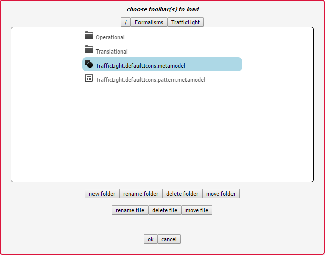
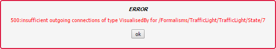

Using a Modelling Language¶
Using a modelling language is relatively easy, and requires you to make use of the MainMenu toolbar:

Loading a Formalism Toolbar¶
The first step when using a language is to load its associated formalism toolbar by pressing the second button on the MainMenu toolbar. You are presented with a file browser. To load the TrafficLights example, for example:
The toolbar allows you to place instances of classes on the canvas and connect them. For more information, see Formalism Toolbars.
Opening a Model¶
To open a model, press the fifth button of the MainMenu toolbar. Opening a model replaces the currently opened model, if any. If there are any unsaved changes in the currently opened model, you will receive a warning.
Saving a Model¶
When you are done editing, you can save your model by pressing the seventh button on the MainMenu toolbar. If this is the first time you save a model, you will be presented with a file browser that allows you to choose a name for your model.
Note
Model names need to end with the .model file extension.
Validating a Model¶
To validate whether the structure of your model adheres to all constraints defined by the language, press the third-last button. If no message appears, it means all constraints are satisfied. Otherwise, a message appears detailing the constraint that failed. For example:
